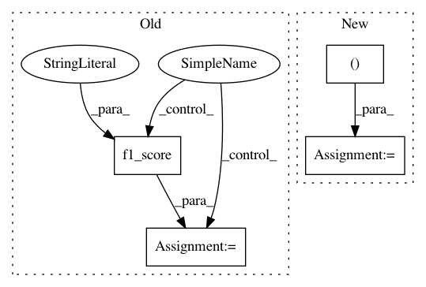

c8acb227237610d0dc3c74b0d6bb0cf07070e9a3,secuml/core/classif/monitoring/perf/binary_indicators.py,BinaryIndicators,compute_precision_recall_fscore,#BinaryIndicators#Any#Any#,75
Before Change
else:
precision = precision_score(ground_truth, predictions,
average="binary")
f_score = f1_score(ground_truth, predictions, average="binary")
// Check the presence of positive examples in ground_truth
if sum(ground_truth) > 0:
recall = recall_score(ground_truth, predictions, average="binary")
else:
After Change
self.fold_auc[fold_id] = roc_auc
def compute_precision_recall_fscore(self, ground_truth, predictions):
precision, recall, f_score, _ = precision_recall_fscore_support(
ground_truth, predictions,
average="binary",
warn_for=())
return precision, recall, f_score
def compute_fpr(self, ground_truth, predictions):
if len(predictions) == 0:
In pattern: SUPERPATTERN
Frequency: 3
Non-data size: 4
Instances
Project Name: ANSSI-FR/SecuML
Commit Name: c8acb227237610d0dc3c74b0d6bb0cf07070e9a3
Time: 2019-09-03
Author: anael.beaugnon@ssi.gouv.fr
File Name: secuml/core/classif/monitoring/perf/binary_indicators.py
Class Name: BinaryIndicators
Method Name: compute_precision_recall_fscore
Project Name: rusty1s/pytorch_geometric
Commit Name: 0880e905186997ec6545a65c277a4848e0505eed
Time: 2019-04-08
Author: matthias.fey@tu-dortmund.de
File Name: examples/ppi.py
Class Name:
Method Name: test
Project Name: rusty1s/pytorch_geometric
Commit Name: 49675c507e5afa9165e378fd738a15a16f323078
Time: 2019-06-13
Author: matthias.fey@tu-dortmund.de
File Name: examples/geniepath.py
Class Name:
Method Name: test